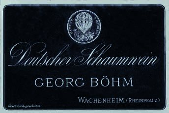
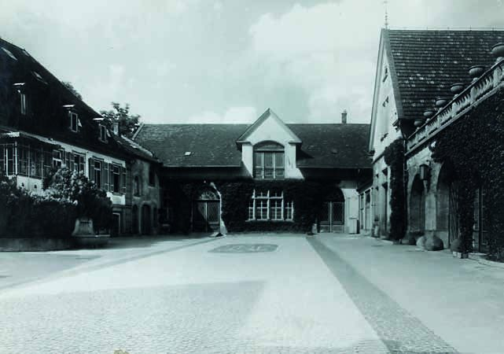
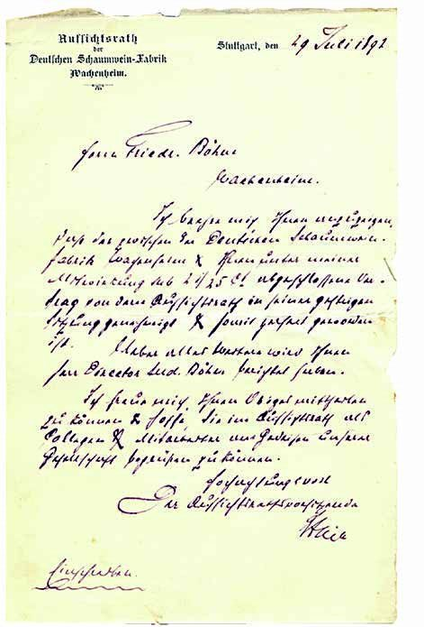
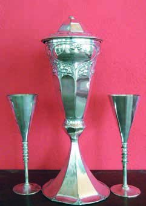
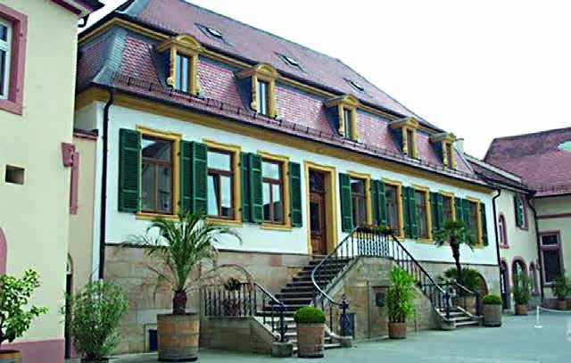
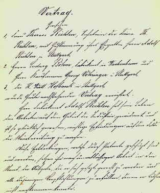
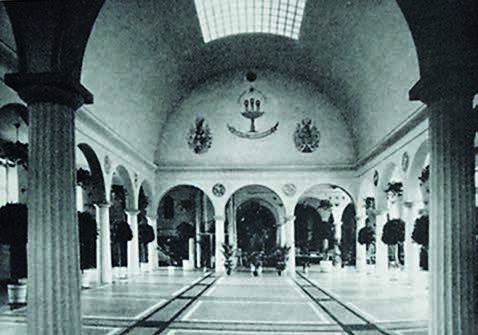

II. Die Geschichte von Friedrich Böhm · Kapitel 8
Die Sektkellerei Schloss Wachenheim
Die Schaumweinkellerei Wachenheim AG
Schreiben des Aufsichtsrates der Deutschen Schaumweinfabrik Wachenheim, aus dem hervorgeht, dass der Bruder Ludwig Direktor war, und dass der am 21 Juli 1897 abgeschlossene Vertrag vom Aufsichtsrat genehmigt wurde
Die Familie Böhm war in dritter Generation dem Wein verbunden. Friedrich Böhm baute die väterliche Weinkellerei zu einem modernen Handelsunternehmen aus. Eine besondere unternehmerische Herausforderung war für ihn die Sekterzeugung. Nach langwierigen Studien mit der klassischen Flaschengärung suchte er nach einer kommerziell vorteilhafteren Methode. Das Reihlen‘sche Patent schien den Weg zu weisen.
F. Adolf Rheilen aus Stuttgart hatte ein Verfahren entwickelt, um die Vergärung in druckfesten Groβbehältern durchzuführen. Er hatte mit den Patenten „Fein zerteilte Pflanzenfasern als Fermentträger, genannt Gährfaser“, und „Verfahren und Gerät zur kontinuierlichen Darstellung und Abfüllung kohlensaurer Getränke“ sich gesetzlich das Verfahren absichern lassen. Am 17. 1.1887 wurde von Friedrich und Bruder Luwig Böhm gemeinsam mit der württembergischen Hofbank das Rheilensche Patent zur Erzeugung von Tankgärsekt erworben (eine Abschrift des Verfahren befindet sich im Besitz von Hans Jörg Böhm). Aufbauend auf der detaillierten Schilderung der Champagnerherstellung von L. Robert, der das Sakrileg beging, das gehütete Geheimnis der Champagnerherstellung der 25 subsequenten Erzeugerprozesse, einschlieβlich
Der Adelaysche Hof
Auch heute noch kann man mit einigen Umständen im Fasskeller der heutigen Sektkellerei Schloss Wachenheim den Familiennamen im Schlusstein erkennen
Die Empfangshalle der Sektkellerei
Auszug aus dem Vertrag, Erwerb des Reihlen'schen Patents zur Sekterzeugung
der Verwendung des Mannazuckers zu verraten. Durch die neue Technik von Beton und Monier für druckresistente Betonbehälter war es auf diese Weise möglich, stahlarmierte Grossbehälter zu erzeugen. So sollte es möglich sein, Sekt wesentlich preisgüntiger als bei der traditionellen Flaschengärung herzustellen. Gemeinsam erwarben die Brüder daraufhin mit finanzieller Hilfe der Familie Leonhard 1882 das damaligen Adolay’sche Anwesen (auch Steinhausser’scher Hof oder Dahlberger Hof ).
Der Anfang war schwer, man erzählt von explodierten Behältern und anderen Schwierigkeiten, die sich offensichtlich zu jener Zeit nicht zufriedenstellend lösen liessen. Der Kapitalbedarf zwang 1888 zur Umwandlung der Sektkellerei in eine Aktiengesellschaft. Die Brüder Ludwig und Friedrich Böhm brachten das Adolay’scher Anwesen ein, in dem 4 der Kinder von Friedrich und Emilie Böhm zur Welt kamen, zum Gegenwert von 214.000 Mark (was dem dreifachen Kaufpreis des Anwesens entsprach). Sie erhielten weitere 300.000.- Mark, wovon sie 50.000.- Mark in Aktien an Frau Terese Rheilen abtreten mussten. Der Restbetrag wurde von der Königlichen Württembergischen Hofbank eingebracht. Die Aktiengesellschaft wurde als “Deutsche Schaumweinfabrik Wachenheim in Wachenheim Rheinpfalz” gegründet. Auf 12 Jahre wurde Ludwig Böhm zum Vorstandsvorsitzenden und Friedrich zum
Hier wohnten Friedrich und Emilie und wuchsen ihre 6 Kinder auf
Vorstand ernannt. Friedrich Böhm geriet in Konflikt mit den übrigen Gesellschaftern. Er verkaufte seine Anteile einschliesslich des “Schlosses” und verzog nach Bad Dürkheim. Bruder Ludwig nach München.
Erst nach der Übernahme des Vorstandes durch Dr. Otto Hans Wagner wurde das Unternehmen in “Sektkellerei Schloss Wachenheim” umbenannt und die Sekterzeugung auf das klassische Verfahren der Flaschengärung umgestellt. Die Zeit für das “Reversionsverfahren” war einfach noch nicht reif. Friedrich Böhms Enkel Karl Friedrich, der das Lehrbuch zum rheilen'schen Verfahren erbte, nahm in der “Pfalztraube” mit der Sektmarke “Weisstern” die Herausforderung erfolgreich auf, allerdings mit stählernen Drucktanks und einem neuen Verfahren zum Auffangen und zur Zwischenlagerung der verflüssigten eigenen Gärgase, die dann später wieder zugesetzt wurden.
Gastvolontär Bernd Carstens erlernte diese Technik in der Pfalztraube und konnte das Verfahren mit dem Zusatz der eigenen Gärkohlensäure als naturrein deklarieren, was zum grossen Erfolg der 60er Jahre des “Carsten SC” Sektes führte.
Ehrenpokal von Friedrich Böhm als einer der Väter des Genossenschaftswesens der Pfalz






